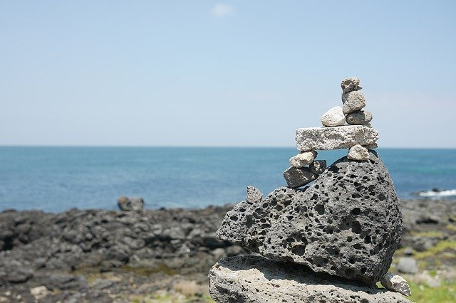

TOUR
JEJU ISLAND
BEST TOUR

새별오름, 나홀로 나무
제주에는 유명한 나홀로나무가 두 그루가 있는데, 하나는 항몽유적지 나홀로나무,
그리고 새별오름 나홀로나무가 그것이다. 제주 새별오름 나홀로나무의 경우, 제주도
오름 2개를 배경으로 서있는 모습이 아름다워 많은 사람이 찾는 곳이다.
제주 새별오름의 나홀로나무가 있는 금악리는 한라산 서남쪽 해안과 산록 지대 사이에
있는 광활한 평야 지대로, 그 가운데 서 있는 나무와의 조화가 미묘한 분위기를 풍기는
매력이 있다. 스냅사진을 찍기 위해 찾는 이들이 많다.
[네이버 지식백과] - 나홀로나무 (대한민국 구석구석, 한국관광공사)
list
만장굴
제주 말로 '아주 깊다'는 의미에서 '만쟁이거머리굴'로 불려온 만장굴은 약 10만년전~30만년전에 생성, 제주도는 180만년전에 형성된 것으로 추정되지만, 1958년에야 당시 김녕초등학교 교사였던 부종휴씨에 의해 발견되어 세상에 알려지게 되었다. 만장굴은 총 길이가 약 7.4km에 이르며, 부분적으로 다층구조를 지니는 용암동굴이다. 인근에 있는, 김녕사굴, 밭굴, 개우젯굴과 애초에 모두 연결되어 있었으나 천장이 붕괴되면서 분리된 것으로 여겨진다.
비자림
아이와 함께 천천히 걸으며 숲속의 신비로움에 빠지고 싶다면 비자림을 추천한다. 천 년의 세월이 녹아든 신비로움 가득한 비자림은 500~800년생 비자나무들이 자생하는 세계적으로도 희귀한 장소다. 벼락 맞은 나무부터 긴 세월이 느껴지는 아름드리 나무까지 다양한 비자나무를 만날 수 있다. 비자나무 외에도 단풍나무, 후박나무 등 다양한 수종이 숲을 메우고 있다. 덕분에 숲 입구에서부터 기분 좋은 향기가 퍼져 나온다. 피톤치드를 머금은 상쾌한 산책길을 따라 자박자박 걷다 보면 자연스레 산림욕의 매력에 빠지게 된다.
용머리해안
용머리 해안은 산방산 자락에서 해안가로 뻗어나가는 곳에 위치한다. 마치 바다 속으로 들어가는 용의 머리를 닮았다 해서 용머리해안으로 불린다. 수 천 만년 동안 층층이 쌓인 사암층 암벽이 파도에 깎여 기묘한 절벽을 이루고 있다. 파도의 치여 비밀의 방처럼 움푹 패인 굴 방이나 암벽이 간직하고 있는 파도의 흔적은 기나긴 역사와 마주할 때의 웅장함을 느끼게 한다. 길이 30~50m의 절벽이 굽이 치듯 이어지는 장관은 CF와 영화의 배경으로도 촬영된 바 있다.
이호테우해수욕장
낮과 밤이 모두 아름다운 제주 해변. 그중에서도 많은 여행객에게 사랑 받는 해변이 있다. 조랑말 등대로 제주도 사진 찍기 좋은 곳으로 잘 알려진 이호테우해변이다. 소나무 숲 사이에는 캠핑장이 마련되어 있어 여름이면 텐트를 가지고 캠핑을 즐기러 오는 사람들이 많다. 붉은 조랑말과 흰색의 조랑말은 극명하게 대조되는 색감이 우리에게 이국적인 풍경을 선사한다. 또한 이호테우해변 길목에는 아카시아 숲이 우거져 있고, 모래사장 뒤에는 소나무 숲이 형성되어 있다.
gallery
- 